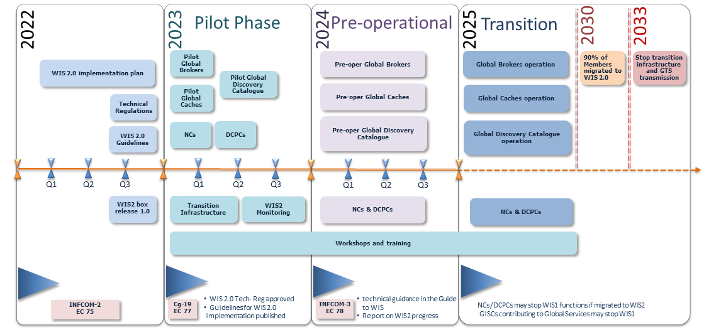
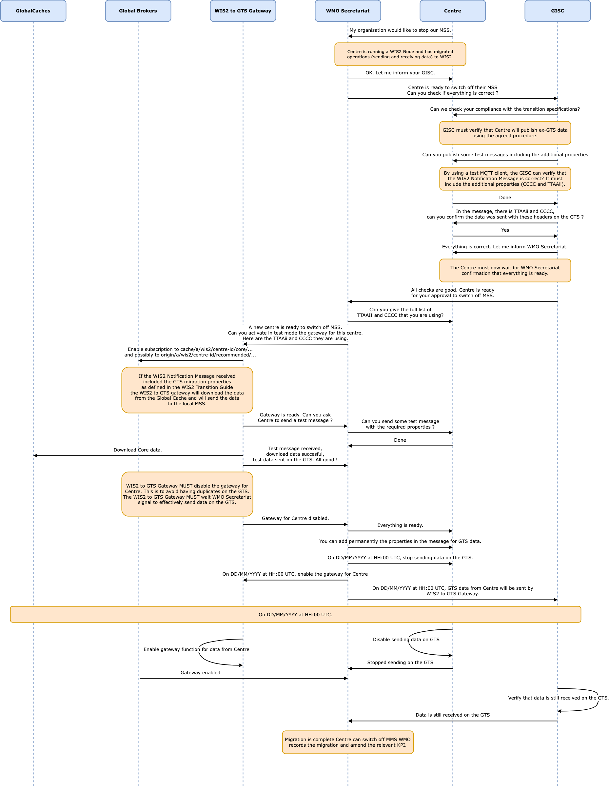

World Meteorological Organization |
Date: 2026-03-16 |
Version: 1.0.0 |
Document status: APPROVED |
Revision history: see Annex A |
Document location: https://wmo-im.github.io/wis2-transition-guide/transition-guide/wis2-transition-guide-APPROVED.html |
WMO publication location: https://library.wmo.int/idurl/4/69050 |
Standing Committee on Information Management and Technology (SC-IMT)[1] |
Commission for Observation, Infrastructure and Information Systems (INFCOM)[2] |
Copyright © 2024 World Meteorological Organization (WMO) |
- PREAMBLE
- 1. INTRODUCTION
- 2. PRINCIPLES
- 3. TEMPORARY GLOBAL SERVICES
- 4. STOPPING A MESSAGE SWITCHING SYSTEM
- 5. MANAGEMENT OF WIS1 AND GTS
- 6. MANAGEMENT OF WIS CENTRES
- 7. References
- 7. References
- Annex A: Revision History
PREAMBLE
The present publication establishes the provisions for the transition from the WMO Information System (WIS) 1.0 and the Global Telecommunication System (GTS) to WIS 2.0. The provisions for the WIS2 transition provide technical guidance and describe the practices to be followed by Members to implement WIS 2.0 and decommission the WIS 1.0 and GTS systems. The practices described in this publication facilitate a smooth implementation of the technical regulation described in the Manual on the WMO Information System (WMO-No. 1060), Volume II (hereinafter Manual on WIS, Volume II), and further explained in the Guide to the WMO Information System (WMO-No. 1061), Volume II (hereinafter Guide to WIS, Volume II).
1. INTRODUCTION
The WMO Executive Council, through Resolution 34 (EC-76) - Implementation plan update of the WMO Information System 2.0, endorsed the WMO Information System 2.0 (WIS2) implementation plan. The Resolution also recognized the importance of establishing a pilot phase to develop the WIS2 infrastructure and begin testing it, in order to be ready for a pre-operational phase in 2024, and then for the transition starting in 2025. This plan will be implemented according to the schedule provided in Figure 1. The pilot phase was completed at the end of 2023, with several Members collaborating in building the WIS2 infrastructure. Each Member had a different role in the WIS2 framework and implemented a specific component. Starting in January 2024, the implementation of WIS2 entered the pre-operational phase, and the WIS2 services shall be ready to transition to an operational configuration, which is critical to ensure that WIS2 can serve the WMO community operationally, from the beginning of 2025. Migration to WIS2 is planned to occur between 2025 and 2030, with an expected progress rate of up to 90%. The GTS is planned to be decommissioned by 2033.

Key: NCs = National Centres; DCPCs = Data Collection and Production Centres; GISCs = Global Information System Centres
2. PRINCIPLES
The following principles are appropriate for the transition.
Principle 1: Each National Meteorological and Hydrological Service (NMHS) will be able to make the migration during the agreed period 2025–2030:
-
NMHSs will migrate between 2025 and 2030 at a time convenient for them. There will not be a simultaneous migration of all the WIS centres from WIS1 to WIS2.
Note: WIS centres are Global Information System Centres (GISCs), Data Collection or Production Centres (DCPCs) and National Centres (NCs).
Principle 2: No GTS data loss during the transition:
-
During the pre-operational phase, and in coordination with the regional associations and Global Information System Centres (GISCs), WIS2 infrastructure will be established, in order to avoid data loss during the transition. The aim of this infrastructure is to ensure that data sent on the GTS can be received by a site having migrated to WIS2, and the data, previously sent on the GTS, sent on WIS2, can be received by a site still on the GTS.
Principle 3: Each WIS centre will decide when to decommission WIS1 and GTS:
-
Decommissioning WIS1 and GTS services will be the decision of each National Centre (NC), Data Collection and Production Centre (DCPC) or GISC, when they have considered that the migration is complete for them and their users;
-
After migration to WIS2, there is no requirement to run a Message Switching System (MSS) to receive or send data from centres that have not made the transition. The centre will decide when and if it wishes to stop its MSS. It can also stop data dissemination to GTS.
Principle 4: New data (such as from the Global Basic Observing Network (GBON), or related to climate, hydrology and the cryosphere) will be exchanged solely on WIS2:
-
WIS2 is designed to enable Resolution 1 (Cg-Ext(2021)) – WMO Unified Policy for the International Exchange of Earth System Data (World Meteorological Congress: Abridged Final Report of the Extraordinary Session (WMO-No. 1281)) and to support the WMO Global Basic Observing Network. The new data will be available on WIS2. A centre not having made the migration to WIS2 will not receive the new data. This data will not have GTS TTAAii headers and will not be exchanged over the GTS.
3. TEMPORARY GLOBAL SERVICES
3.1 GTS to WIS2 gateway
According to the WIS2 implementation plan, the GTS will be decommissioned by 2033 and NMHSs will use the WIS2 platform for data exchange, with the transition starting in 2025. During the transition period, in order to avoid some WIS centres being forced to run both data-sharing frameworks (WIS2 and GTS) simultaneously, and given the challenges associated with maintaining two operational systems for the same purpose, a gateway from GTS to WIS2 has been designed. The gateway takes into account the time required for Members to migrate to the new system and minimizes the time a Member has to operate both systems in parallel.
3.1.1 Purpose
The purpose of the GTS to WIS2 gateway is to enable Members who have migrated to WIS2, and stopped their GTS systems, to continue receiving GTS data from WIS2. This gateway also enables users who are not connected to GTS to access GTS data from WIS2, during the transition phase. The GTS to WIS2 gateway will forward the GTS traffic it receives to WIS2. In accordance with the WIS2 specification, all data received on one GTS link will be stored on an HTTP(s) endpoint of the gateway, and will generate a WIS2 Notification Message.
3.1.2 GTS to WIS2 gateway provider
To ensure resilient operation, there will be more than one GTS to WIS2 gateway.
3.1.3 Technical requirements
-
A GTS to WIS2 gateway is a DCPC function. All requirements related to WIS2 Nodes are applicable. A GTS to WIS2 gateway will obtain a specific unique centre-id from the WMO Secretariat;
-
In addition to the standard WIS2 Node specifications, the GTS to WIS2 gateway will support the following:
-
The topic hierarchy for GTS data on WIS2 will be:
origin/a/wis2/{centre-id}/data/[core|recommended]/T1/T2/A1/A2/ii/CCCC -
Example for DWD:
origin/a/wis2/de-dwd-gts-to-wis2/data/[core|recommended]/T1/T2/A1/A2/ii/CCCC -
Example for JMA:
origin/a/wis2/jp-jma-gts-to-wis2/data/[core|recommended]/T1/T2/A1/A2/ii/CCCC -
The
T1/T2/A1/A2/ii/CCCCabove is derived from the headers of the data received on the GTS
-
-
The Global Caches will cache data that is being published using
corein the topic hierarchy; -
Data consumers receiving the GTS data through WIS2 will need to be able to handle duplicates. This is consistent with the current practices of handling duplicate messages on the GTS;
-
Access to recommended GTS data should be limited to WMO Members;
-
Each GTS to WIS2 gateway maintains a list of TTAAii headers for recommended data, in order to be able to send the notification to the correct topic. The list is coordinated and shared between the gateway operators.
3.2 WIS2 to GTS gateway
The WIS2 implementation plan outlines a gradual transition of data exchange from GTS to WIS2. The transition is expected to occur between 2025 and 2030. The GTS will be decommissioned once the transition is complete.
3.2.1 Purpose
When a National Meteorological Centre (NMC), running a Message Switching System and exchanging data on the GTS, has implemented WIS2, it may wish to stop sending its data directly on the GTS so that it can stop the MSS.
For a Member that wishes to stop MSS, the WIS2 to GTS gateway will ensure that only data currently available on the GTS will be re-published on the GTS, so that no data is lost during the transition.
To ensure resilient operation, there will be more than one WIS2 to GTS gateway.
3.2.2 WIS2 to GTS gateway operators
The gateway will be provided by designated Regional Telecommunication Hubs (RTH).
3.2.3 Technical requirements
3.2.3.1 For WIS centres wishing to stop their Message Switching System
A Member planning to stop GTS transmission shall provide its data in conformance with WIS2 Node operations on WIS2. For data that have previously been available on the GTS, and should continue to be available on the GTS, the GTS Abbreviated Heading Line (AHL) of the bulletin in which the data are to be published needs to be indicated. This is done by including the gts property in the WIS2 Notification Message (see example in the next paragraph).
The gts property enables the WIS2 to GTS gateway operator to easily identify data for republication on the GTS, and the AHL of the associated data. For example:
"properties": {
…
"gts": {
"ttaaii": "FTAE31",
"cccc": "VTBB"
}
}For core data, the Global Cache will ensure their normal operation and the data to be relayed onto the GTS will be available on the Global Cache. For recommended data, WIS centres should allow unrestricted access from the gateways. WIS centres will inform the WMO Secretariat, so that the gateway will establish the required subscriptions.
3.2.3.2 Guidance for WIS2 to GTS gateway operators
A WIS2 to GTS gateway operator shall operate the following components throughout the transition period:
(a) A data consumer, to retrieve data published on WIS2. All data consumer specifications apply to the WIS2 to GTS gateway;
(b) An MSS, with the required configuration to reach all RTHs;
(c) The gateway’s MSS will process incoming data files, batching individual items into bulletins as per standard configuration, and publish those bulletins onto the GTS for onward distribution via RTHs on the Main Telecommunication Network (MTN) and beyond. The mechanism depends on local implementation choices and may differ from one gateway to another.
Over the transition period, the list of abbreviated headings (TTAAii/CCCC) to relay from WIS2 to GTS will grow when new NMCs plan to stop their MSS. It means that the gateway will require a method that allows for the addition of batches of abbreviated headings when new centres are ready for the transition.
To ensure resilient operation, the gateway should subscribe to notification messages from multiple Global Brokers.
During the transition period, other gateways will republish GTS data to WIS2. These GTS to WIS2 Gateways will publish via a designated centre-id. To avoid an infinite loop of republication, it is essential that a WIS2 to GTS gateway does not subscribe to notification messages associated with the centre-id of a GTS to WIS2 gateway.
4. STOPPING A MESSAGE SWITCHING SYSTEM
Thanks to the gateway functions previously described, WIS centres that currently use the GTS to exchange operational data and that have successfully implemented a WIS2 Node with the additional features required for the gateways to provide the gateway service, will be able to stop their MSS, if they wish to do so, before the end of the complete migration. Gradually stopping of the whole MSS shall be done in an orderly and coordinated manner so that all data required by Members for their operations will continue to be available.
Section 6 of the present guide describes the various roles of GTS (NMC, RTH, World Meteorological Centres (WMC)). It also details when a centre can stop its MSS. When all the conditions for a centre are met, the decommissioning procedure in Figure 2 can be applied.

Figure 2 details the actions required and the role of the various entities involved in these actions. The GISC responsible for the centre will have a key role to play. The GISC will have to ensure that the centre has properly implemented the requirements and that the procedure is well understood by the centre so that no data are lost during the transition. The WMO Secretariat will act as the coordination body between all parties. It is crucial that all parties strictly follow the agreed procedure.
It must also be noted that the final switch (that is, the action of stopping the MSS of the WIS centre and activating the gateway function for the TTAAii/CCCC of the WIS centre) will take place at the same moment. The exact time and date will be chosen by the various parties, under the coordination of the WMO Secretariat.
Upon request by a centre, the WMO Secretariat will inform the gateways when a new centre-id wishes to use the relay function, including the required subscription topics. When requested by the WMO Secretariat, the gateways will implement the following subscriptions:
(a) Subscribe to notifications on the topic: cache/a/wis2/{centre-id}/data/#, where {centre-id} refers to a WIS2 Node wishing to stop the native GTS function;
(b) Potentially subscribe to origin/a/wis2/{centre-id}/data/recommended/# where the WIS2 Node also has recommended data on the GTS.
It is important to note that subscribing to these topics should not imply pushing the data onto the GTS immediately. Making the data available on the GTS will require explicit approval from the WMO Secretariat. It is up to the gateway operators to implement this "kill switch" (for example, by disabling the subscription or blocking the flow between the data consumer and the MSS for those TTAAii/CCCC only).
5. MANAGEMENT OF WIS1 AND GTS
During the transition to WIS2, maintaining a very high level of service of WIS1 and GTS is key to ensuring that all Members and WIS users can send and receive the data required to run their operations, regardless of whether they have migrated to WIS2 or are still relying on the GTS. As described earlier, the WIS2 to GTS gateway and the GTS to WIS2 gateway will have a key role in this. The present section describes what Members are required to do during this transition, depending on their role within the GTS and WIS1.
5.1 Maintenance and operation of Message Switching Systems
5.1.1 Main Telecommunication Network
During the migration to WIS2, the Main Telecommunication Network (MTN), along with the WMCs and designated RTHs, shall keep their MSS operational. They shall continue to publish data, collect the bulletins from their associated NMCs and transmit them in the appropriate form on the MTN, either directly or through the appropriate WMC, until the transition from GTS to WIS2 is completed.
5.1.2 Regional Telecommunication Hubs
Regional Telecommunication Hubs (RTHs) shall keep their MSS operational and continue to publish data collecting the bulletins from their associated NMCs and transmitting them in the appropriate form on the MTN, either directly or through the appropriate WMC/RTH in GTS until all Members in their area of responsibility migrate from GTS to WIS2.
When RTHs have migrated to WIS2 and all Members in their area of responsibility have migrated to WIS2, RTHs may decide to turn off their MSS. In this case, they should contact the WMO Secretariat to switch off their MSS in a coordinated manner.
5.1.3 National Meteorological Centres
National Meteorological Centres (NMCs) shall operate a WIS2 Node to share their data and discovery metadata in WIS2.
NMCs that have implemented a WIS2 Node and published all the data transmitted on the GTS on WIS2 may, if they wish, turn off their MSS, and stop transmitting data on the GTS. When NMCs decide to decommission and turn off their GTS MSS and stop transmitting their data on GTS, they shall include the GTS properties in the WIS2 Notification Message as described in the WIS2 to GTS gateway technical requirements (section 3.2.3).
Note: The WIS2 Notification Messages with GTS properties will only concern data that are already published in GTS. New data will only be published on WIS2.
5.2 Maintenance and operation of WIS1 Catalogue and Cache by Global Information System Centres
Each Global Information System Centres (GISC) shall maintain their WIS1 Catalogue and Cache as long as WIS users are using their services for operations. GISCs are invited to help users migrate to WIS2. When a GISC has successfully migrated its users to WIS2, the GISC may stop its WIS1 Cache and Catalogue service and shall inform the WMO Secretariat.
GISC Seoul and GISC Offenbach will continue to provide WIS1 discovery metadata and the WIS1 Catalogue until the transition from GTS and WIS1 to WIS2 is completed or deemed unnecessary when all WIS1 users have migrated to WIS2.
Neither new discovery metadata nor changes to existing metadata will be allowed in the WIS1 Catalogue from 2025 onwards. For WIS2, new metadata will only be added as WMO Core Metadata Profile version 2 (WCMP2) to the Global Discovery Catalogue.
5.3 Management of GTS abbreviated headings
The GTS abbreviated headings are described in the Manual on the Global Telecommunication System (WMO-No. 386) (Manual on GTS). The data designators T1T2A1A2ii are defined in Attachment II.5 of the Manual on GTS. The GTS abbreviated headings are not required in WIS2, and their use is limited to the exchange of data on the GTS. Once WIS2 becomes operational, any further evolution of the GTS, including the transmission of new data, will not be permitted. Therefore, the Manual on GTS will no longer be updated from 31 December 2024. The publication Weather Reporting (WMO-No. 9), Volume C1, contains the list of meteorological bulletins exchanged on the GTS. Members are required to update Volume C1 every time a change in the bulletins takes place, however only a few Members are doing so with regularity. The list is therefore incomplete and is not consistent with the bulletins effectively exchanged on GTS. With the start of the WIS2 operational phase, there will not be any change in the list of meteorological bulletins transmitted on GTS, therefore Volume C1 will not be updated any longer from 31 December 2024.
5.3.1 GTS headings for the International Civil Aviation Authority
Attachment II.5 of the Manual on GTS containing the data designators T1T2A1A2ii currently used for transmission of data on GTS are also used for the same purpose on the Aeronautical Fixed Telecommunications Network (AFTN) by the International Civil Aviation Authority (ICAO). There is a requirement for WMO to maintain the data designators for ICAO data transmission purposes. To satisfy this requirement, the WMO Secretariat will liaise with ICAO to allow the addition of new data designators when required by ICAO. The new data designators requested by ICAO will not be published in the Manual on GTS, but rather a different means for their publication will be agreed upon by WMO and ICAO.
6. MANAGEMENT OF WIS CENTRES
6.1 National Centres
National Centres (NCs) can start migrating to WIS2 from January 2025 when WIS2 will be operational. It is recommended to start planning and preparation in advance and in a way that the migration will be completed preferably by 2030 and not later than 2033. The migration to WIS2 by a National Centre can be considered complete when at least one WIS2 Node for the NC is operational and all the datasets transmitted on GTS are also shared on WIS2 in compliance with the technical requirements described in the Manual on WIS, Volume II and the Guide to WIS, Volume II. A National Centre that has fully migrated to WIS2 shall communicate to the WMO Secretariat that its migration is complete and shall keep the WIS1 and GTS operational in parallel with the WIS2 systems until reception of a communication from the WMO Secretariat allowing the switch from the WIS1 and GTS systems.
6.2 Data Collection and Production Centres
Data Collection and Production Centres (DCPCs) can start migrating to WIS2 from January 2025 when WIS2 will be operational. It is recommended to start planning and preparation in advance and in a way that the migration will be completed preferably by 2030 and not later than 2033. The migration to WIS2 by a DCPC can be considered complete when at least one WIS2 Node for the DCPC is operational and all the datasets transmitted on GTS are also shared on WIS2 in compliance with the technical requirements described in the Manual on WIS, Volume II and the Guide to WIS, Volume II. A DCPC that has fully migrated to WIS2 shall communicate to the WMO Secretariat that its migration is complete and shall keep the WIS1 and GTS operational in parallel with the WIS2 systems until reception of a communication from the WMO Secretariat allowing the switch from the WIS1 and GTS systems.
7. References
7.1 Normative
-
Manual on the WMO Information System (WMO-No. 1060), Volume II (the following appendices were adopted in Resolution 15 of the seventy-eighth session of the Executive Council (EC-78) and are available in the 2024 edition of the Manual on the WMO Information System):
-
Appendix D: WIS2 Topic Hierarchy (WTH)
-
Appendix E: WIS2 Notification Message (WNM) format
-
Appendix F: WMO Core Metadata Profile version 2 (WCMP2)
-
WIS2 Metric Hierarchy (WMH):https://github.com/wmo-im/wis2-metric-hierarchy
-
7.2 Informative
-
WMO Information System 2.0 Strategy (WMO-No. 1213)
-
WMO Guidelines on Emerging Data Issues (WMO-No. 1239)
7. References
7.1 Normative
-
Manual on the WMO Information System (WMO-No. 1060), Volume II (the following appendices were adopted in Resolution 15 of the seventy-eighth session of the Executive Council (EC-78) and are available in the 2024 edition of the Manual on the WMO Information System):
-
Appendix D: WIS2 Topic Hierarchy (WTH)
-
Appendix E: WIS2 Notification Message (WNM) format
-
Appendix F: WMO Core Metadata Profile version 2 (WCMP2)
-
WIS2 Metric Hierarchy (WMH):https://github.com/wmo-im/wis2-metric-hierarchy
-
7.2 Informative
-
WMO Information System 2.0 Strategy (WMO-No. 1213)
-
WMO Guidelines on Emerging Data Issues (WMO-No. 1239)